Small strain plasticity¶
A framework for the approximation of plasticity models in GetFEM++. See in src/getfem_plasticity.cc and interface/src/gf_model_set.cc for the brick implementation and to extend the implementation to new plasticity models.
Theoretical background¶
We present a short introduction to small strain plasticity. We refer mainly to [SI-HU1998] and [SO-PE-OW2008] for a more detailed presentation.
Additive decomposition of the small strain tensor¶
Let be the reference configuration of a deformable body and  be the displacement field. Small strain plasticity is based on the additive decomposition of the small strain tensor in
be the displacement field. Small strain plasticity is based on the additive decomposition of the small strain tensor in
where is the elastic part of the strain tensor and the plastic one.
Internal variables, free energy potential and elastic law¶
We consider
a vector field of strain type internal variables ( if no internal variables are considered). We consider also a free energy potential
such that corresponding stress type variables are determined by
where  is the Cauchy stress tensor and
is the Cauchy stress tensor and  the stress type internal variables. The plastic dissipation is given by
the stress type internal variables. The plastic dissipation is given by
In the standard cases, is decomposed into
In the case of linearized elasticity, one has where is the fourth order elasticity tensor. For isotropic linearized elasticity this expression reduces to where  is the shear modulus and is the bulk modulus.
is the shear modulus and is the bulk modulus.
Plastic potential, yield function and plastic flow rule¶
Plastic yielding is supposed to occur when the stress attains a critical value. This limit is determined by a yield function and the condition
The surface  is the yield surface where the plastic deformation may occur.
is the yield surface where the plastic deformation may occur.
Let us also consider the plastic potential 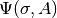, (convex with respect to its both variables) which determines the plastic flow direction in the sense that the flow rule is defined as
with the additional complementarity condition
The variable 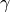 is called the plastic multiplier. Note that when are not differentiable, subdifferentials have to be used. Associated plasticity corresponds to the choice .
Initial boundary value problem¶
The weak formulation of a dynamic elastoplastic problem can be written, for an arbitrary kinematically admissible test function  , as follows:
, as follows:
for being initial values and  and 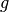 being prescribed forces in the interior of domain
and 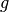 being prescribed forces in the interior of domain  and on the part of the boundary
and on the part of the boundary  .
.
Note that plasticity models are often applied on quasi-static problems which correspond to the term being neglected.
Given a time step , from time to  , we will denote in the sequel
, we will denote in the sequel  the approximations at time of respectively. These approximations correspond to the chosen time integration scheme (for instance one of the proposed schemes in The model tools for the integration of transient problems) which can be different than the time integration scheme used for the integration of the flow rule (see below).
the approximations at time of respectively. These approximations correspond to the chosen time integration scheme (for instance one of the proposed schemes in The model tools for the integration of transient problems) which can be different than the time integration scheme used for the integration of the flow rule (see below).
Flow rule integration¶
The plastic flow rule has to be integrated with its own time integration scheme. Among standards schemes, the backward Euler scheme, the 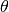-scheme (or generalized trapezoidal rule) and the generalized mid-point scheme are the most commonly used in that context. We make here the choice of the -scheme ( corresponds to the backward Euler scheme as a special case).
corresponds to the backward Euler scheme as a special case).
Let be the displacement at the considered time step and at the previous one.
The -scheme for the integration of the plastic flow rules reads as
(1)
(2)
with the complementary condition
where is the parameter of the -scheme. We exclude  because we will not consider explicit integration of plasticity. Let us recall that corresponds to the backward Euler scheme and to the Crank-Nicolson scheme (or trapezoidal rule) which is a second order consistent scheme. Note that the complementarity condition for the quantities at time step
because we will not consider explicit integration of plasticity. Let us recall that corresponds to the backward Euler scheme and to the Crank-Nicolson scheme (or trapezoidal rule) which is a second order consistent scheme. Note that the complementarity condition for the quantities at time step  is prescribed at the previous time step ( are supposed to be already determined).
is prescribed at the previous time step ( are supposed to be already determined).
A solution would be to solve the whole problem with all the unknows, that is . This is of course possible but would be a rather expensive strategy because of the resulting high number of degrees of freedom. A classical strategy (the return mapping one for instance, see [SO-PE-OW2008] or the closest point projection one) consist in integrating locally the plastic flow on each Gauss point of the considered integration method separately, or more precisely to consider on each Gauss point the maps
with the right hand side of equations (1), (2), i.e.
This means in particular that is the solution to equations (1) and (2). Both these maps and their tangent moduli (usually called consistent tangent moduli) are then used in the global solve of the problem with a Newton method and for the unique remaining variable. The advantage of the return mapping strategy is that the unique variable of the global solve is the displacement . A nonlinear solve on each Gauss point is often necessary which is usualy performed with a local Newton method.
In GetFEM++ we propose both the return mapping strategy and also an alternative strategy developped below which is mainly inspired from [PO-NI2016], [SE-PO-WO2015] and [HA-WO2009] and allow more simple tangent moduli. It consists in keeping (a multiple of) as an additional unknown with respect to . As we will see, this will allow a more generic treatment of the yield functions, the price for the simplicity being this additional unknown scalar field.
First, we consider an additional (and optional) given function whose interest will appear later on (it will allow simple local inverses) and the new unknown scalar field
so that our two main unknows are now . The discretized plastic flow rule integration now reads:
(3)
(4)
(5)
For be given, we define the two maps
where the pair is the solution to equations (3), (4) (without the consideration of (5)). We will see later, that, at least for simple isotropic plastic flow rules, these maps have a simple expression, even sometimes a linear one with respect to .
Still be given the stress reads

The complementarity equation (5) is then prescribed with the use of a well chosen complementarity function, as in [HA-WO2009] for such as:
or
NOTE : The notation is often used in the litterature. The choice here is to preserve the distinction between the two quantities, mainly because ot the possible use of adaptative time step : when the time step is changing, the value has to be multiplied by the new time step, so that it is preferable to store instead of 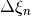 when using the -scheme.
Plane strain approximation¶
A plane strain approximation is a 2D problem which corresponds to the deformation of a long cylindrical object where the strain in the length direction (assumed to be along the axis) is considered small compared to the ones in the other directions and is neglected. It result in a plane strain tensor of the form
We denote
the non neglected components of the strain tensor. In the decomposition of plastic and elastic part of the strain tensor, we assume
and
The adaptation to the plane strain approximation to plastic model is most of the time an easy task. An isotropic linearized elastic response reads
and thus
The nonzero component of the stress tensor is given by
Note that in the common case where isochoric plastic strain is assumed, one has
Plane stress approximation¶
The plane stress approximation describe generally the 2D membrane deformation of a thin plate. It consist in prescribing the stress tensor to have only in-plane nonzero components, i.e.
We will still denote
the in-plane components of the stress tensor. For elastoplasticity, it consists generally to apply the 2D plastic flow rule, prescribing the out-plane components of the stress tensor to be zero with the additionnal variables , , being unknown (see for instance [SO-PE-OW2008]).
For an isotropic linearized elastic response, one has such that
with
so that
(6)
Moreover
(7)
Note that in the case where isochoric plastic strain is assumed, one still has
Some classical laws¶
Tresca : where spectral radius of the Cauchy stress tensor and the uniaxial yield stress (which may depend on some hardening internal variables).
Von Mises : where
the deviatoric part of and .
Perfect isotropic associated elastoplasticity with Von-Mises criterion (Prandl-Reuss model)¶
There is no internal variables and we consider an isotropic elastic response. The flow rule reads
This corresponds to .
The -scheme for the integration of the plastic flow rule reads:

Choosing the factor and still with this gives the equation
Since 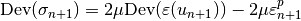 this directly gives:
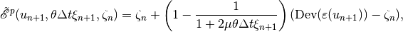
which is a linear expression with respect to (but not with respect to ).
Moreover, is defined by

Elimination of the multiplier (for the return mapping approach)
One has
Thus, denoting , either
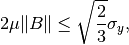
and , i.e. we are in the elastic case, or and one obtains
and thus
The two options can be summarized by
The multiplier (needed for the -scheme for ) is given by
Plane strain approximation
The plane strain approximation has the same expression replacing the 3D strain tensors by the in-plane ones and .
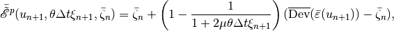
where is the 2D restriction of the 3D deviator.
Moreover, for the yield condition,
And for the elimination of the multiplier,
with and .
Plane stress approximation
For plane stress approximation, using (6) we deduce from the expression of the 3D case
since . Of course, this relation still has to be inverted. Denoting , and one obtains
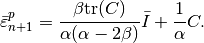
Moreover, for the yield condition, expression (7) can be used.
Isotropic elastoplasticity with linear isotropic and kinematic hardening and Von-Mises criterion¶
We consider an isotropic elastic reponse and the internal variable being the accumulated plastic strain which satisfies
For the isotropic hardening modulus, the linear hardening consists in
i.e. 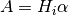 and a uniaxial yield stress defined by
for the initial uniaxial yield stress. The yield function (and plastic potential since this is an associated plastic model) can be defined by
where 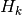 is the kinematic hardening modulus. The same computation as in the previous section leads to
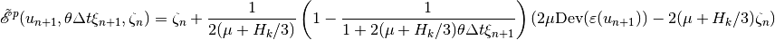
![\begin{array}{rcl} \tilde{\mathscr A}(u_{n+1}, \theta \Delta t \xi_{n+1}, \zeta_{n}, \eta_n) &=& \eta_n + \sqrt{\Frac{2}{3}} \theta \Delta t \xi_{n+1}\|\mbox{Dev}(\sigma_{n+1} - \frac{2}{3}H_k\varepsilon^p_{n+1})\| \\ &=& \eta_n + \sqrt{\Frac{2}{3}} \theta \Delta t \xi_{n+1}\|2\mu\mbox{Dev}(\varepsilon(u_{n+1})) - 2(\mu+H_k/3)\varepsilon^p_{n+1}\| \\ &=& \eta_n + \sqrt{\Frac{2}{3}} \Frac{\theta \Delta t \xi_{n+1}}{1+2(\mu+H_k/3)\theta\Delta t\xi_{n+1}}\|2\mu\mbox{Dev}(\varepsilon(u_{n+1})) - 2(\mu+H_k/3)\zeta_{n}\| \\ &=& \eta_n + \sqrt{\Frac{2}{3}}\Frac{1}{2(\mu+H_k/3)}\left(1 - \Frac{1}{1+2(\mu+H_k/3)\theta\Delta t\xi_{n+1}}\right) \|2\mu\mbox{Dev}(\varepsilon(u_{n+1})) - 2(\mu+H_k/3)\zeta_{n}\|\end{array}](../_images/math/e7e3e961d447c0700b379a5667b25d6769b1eb3a.png)
where and are defined by
Note that the isotropic hardening modulus do not intervene in but only in .
Elimination of the multiplier (for the return mapping approach)
Denoting , and the expression for and becomes
(8)
and the plastic constraint
Thus, either we are in the elastic case, i.e. and
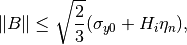
or we are in the plastic case and , and solves the equation
which leads to
The two cases can be summarized by
which directly gives 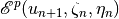 and thanks to (8). The multiplier being given by
Plane strain approximation
Still denoting , , and its in-plane part, one has
with
The yield condition still reads
and for the elimination of the multiplier, has the same expression as in the previous section adapting the value of . The expressions of and have to be adpated accoringly.
Souza-Auricchio elastoplasticity law (for shape memory alloys)¶
See for instance [GR-ST2015] for the justification of the construction of this flow rule. A Von-Mises stress criterion together with an isotropic elastic response, no internal variables and a special type of kinematic hardening is considered with a constraint . The plastic potential and yield function have the form
with the complementarity condition
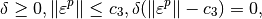
where  are some physical parameters. Note that has to be understood to be the whole unit ball for .
are some physical parameters. Note that has to be understood to be the whole unit ball for .
to be done ...
Elasto-plasticity bricks¶
See the test programs tests/plasticity.cc, interface/tests/matlab/demo_plasticity.m, interface/tests/matlab/demo_plasticity.py and in contrib/test_plasticity.
Generic brick¶
There are two versions of the generic brick. A first one when the plastic multiplier is kept as a variable of the problem where the added term is of the form:

with having a specific value chosen by the brick (in terms of the elasticity coefficients), and when the return mapping strategy is selected (plastic multiplier is just a data), just the added term:

The function which adds the brick to a model md is
getfem::add_small_strain_elastoplasticity_brick
(md, mim, lawname, unknowns_type,
const std::vector<std::string> &varnames,
const std::vector<std::string> ¶ms, region = size_type(-1));
where lawname is the name of an implemented plastic law, unknowns_type indicates the choice between a discretization where the plastic multiplier is an unknown of the problem or (return mapping approach) just a data of the model stored for the next iteration. Remember that in both cases, a multiplier is stored anyway. varnames is a set of variable and data names with length which may depend on the plastic law (at least the displacement, the plastic multiplier and the plastic strain). params is a list of expressions for the parameters (at least elastic coefficients and the yield stress). These expressions can be some data names (or even variable names) of the model but can also be any scalar valid expression of the weak form language (such as “1/2”, “2+sin(X[0])”, “1+Norm(v)” ...). The last two parameters optionally provided in params are the theta parameter of the theta-scheme (generalized trapezoidal rule) used for the plastic strain integration and the time-step`dt`. The default value for theta if omitted is 1, which corresponds to the classical Backward Euler scheme which is first order consistent. theta=1/2 corresponds to the Crank-Nicolson scheme (trapezoidal rule) which is second order consistent. Any value between 1/2 and 1 should be a valid value. The default value of dt is ‘timestep’ which simply indicates the time step defined in the model (by md.set_time_step(dt)). Alternatively it can be any expression (data name, constant value ...). The time step can be altered from one iteration to the next one. region is a mesh region.
The available plasticity laws are:
- “Prandtl Reuss” (or “isotropic perfect plasticity”). Isotropic elasto-plasticity with no hardening. The variables are the displacement, the plastic multiplier and the plastic strain. The displacement should be a variable and have a corresponding data having the same name preceded by “Previous_” corresponding to the displacement at the previous time step (typically “u” and “Previous_u”). The plastic multiplier should also have two versions (typically “xi” and “Previous_xi”) the first one being defined as data if unknowns_type = DISPLACEMENT_ONLY or as a variable if unknowns_type = DISPLACEMENT_AND_PLASTIC_MULTIPLIER. The plastic strain should represent a n x n data tensor field stored on mesh_fem or (preferably) on an im_data (corresponding to mim). The data are the first Lame coefficient, the second one (shear modulus) and the uniaxial yield stress. IMPORTANT: Note that this law implements the 3D expressions. If it is used in 2D, the expressions are just transposed to the 2D. For the plane strain approximation, see below.
- “plane strain Prandtl Reuss” (or “plane strain isotropic perfect plasticity”) The same law as the previous one but adapted to the plane strain approximation. Can only be used in 2D.
- “Prandtl Reuss linear hardening” (or “isotropic plasticity linear hardening”). Isotropic elasto-plasticity with linear isotropic and kinematic hardening. An additional variable compared to “Prandtl Reuss” law: the accumulated plastic strain. Similarly to the plastic strain, it is only stored at the end of the time step, so a simple data is required (preferably on an im_data). Two additional parameters: the kinematic hardening modulus and the isotropic one. 3D expressions only.
- “plane strain Prandtl Reuss linear hardening” (or “plane strain isotropic plasticity linear hardening”). The same law as the previous one but adapted to the plane strain approximation. Can only be used in 2D.
IMPORTANT : remember that small_strain_elastoplasticity_next_iter has to be called at the end of each time step, before the next one (and before any post-treatment : this sets the value of the plastic strain and plastic multiplier).
Additionaly, the following function allow to pass from a time step to another for the small strain plastic brick:
getfem::small_strain_elastoplasticity_next_iter
(md, mim, lawname, unknowns_type,
const std::vector<std::string> &varnames,
const std::vector<std::string> ¶ms, region = size_type(-1));
The parameters have to be exactly the same as the ones of the add_small_strain_elastoplasticity_brick, so see the documentation of this function for any explanations. Basically, this brick computes the plastic strain and the plastic multiplier and stores them for the next step. Additionaly, it copies the computed displacement to the data that stores the displacement of the previous time step (typically “u” to “Previous_u”). It has to be called before any use of compute_small_strain_elastoplasticity_Von_Mises.
The function
getfem::compute_small_strain_elastoplasticity_Von_Mises
(md, mim, lawname, unknowns_type,
const std::vector<std::string> &varnames,
const std::vector<std::string> ¶ms,
const mesh_fem &mf_vm, model_real_plain_vector &VM,
region = size_type(-1));
computes the Von Mises stress field with respect to a small strain elastoplasticity term, approximated on mf_vm, and stores the result into VM. All other parameters have to be exactly the same as for add_small_strain_elastoplasticity_brick. Remember that small_strain_elastoplasticity_next_iter has to be called before any call of this function.
A specific brick based on the low-level generic assembly for perfect plasticity¶
This is an previous version of a elastoplasticity brick which is restricted to isotropic perfect plasticity and is based on the low-level generic assembly. Its specificity which could be interesting for testing is that the flow rule is integrated on finite element nodes (not on Gauss points).
The function adding this brick to a model is:
getfem::add_elastoplasticity_brick
(md, mim, ACP, varname, previous_varname, datalambda, datamu, datathreshold, datasigma, region);
- where:
- varname represents the main displacement unknown on which the brick is added (u).
- previous_varname is the displacement at the previous time step.
- datalambda and datamu are the data corresponding to the Lame coefficients.
- datathreshold represents the plastic threshold of the studied material.
- datasigma represents the stress constraint values supported by the material. It should be composed of 2 iterates for the time scheme needed for the Newton algorithm used. Note that the finite element method on which datasigma is defined should be able to represent the derivative of varname.
- ACP corresponds to the type of projection to be used. It has an abstract_constraints_projection type and for the moment, only exists the VM_projection corresponding to the Von Mises one.
Be careful: datalambda, datamu and datathreshold could be constants or described on the same finite element method.
This function assembles the tangent matrix and the right hand side vector which will be solved using a Newton algorithm.
Additionaly, The function:
getfem::elastoplasticity_next_iter
(md, mim, varname, previous_varname, ACP, datalambda, datamu, datathreshold, datasigma);
computes the new stress constraint values supported by the material after a load or an unload (once a solve has been done earlier) and upload the variables varname and datasigma as follows:
Then, and 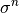 contains the new values computed and one can restart the process.
The function:
getfem::compute_elastoplasticity_Von_Mises_or_Tresca
(md, datasigma, mf_vm, VM, tresca=false);
computes the Von Mises (or Tresca if tresca = true) criterion on the stress tensor stored in datasigma . The stress is evaluated on the mesh_fem mf_vm and stored into the vector VM. Of course, this function can be used if and only if the previous function elastoplasticity_next_iter has been called earlier.
The function:
getfem::compute_plastic_part
(md, mim, mf_pl, varname, previous_varname, ACP, datalambda, datamu, datathreshold, datasigma, Plast);
computes on mf_pl the plastic part of the material, that could appear after a load and an unload, into the vector Plast.
Note that datasigma should be the vector containing the new stress constraint values, i.e. after a load or an unload of the material.

目次
- Small strain plasticity
前のトピックへ
Finite strain Elasticity bricks
次のトピックへ
ALE Support for object having a large rigid body motion
Download
Main documentations
- GetFEM++ User documentation
- Python Interface
- Matlab Interface
- Scilab Interface
- Gmm++
- GetFEM++ project